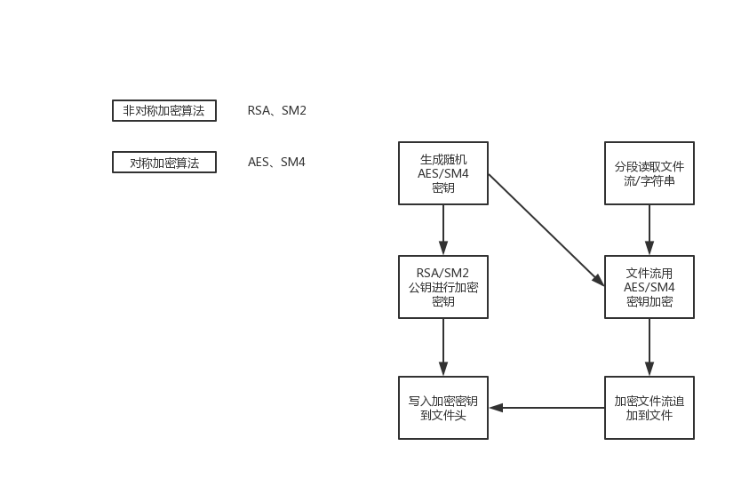

原文连接:https://www.cnblogs.com/yaomaomao/p/12055151.html
某年某月某一天，冷冽寒风中，姚小毛走进了某家公司，开始了新一轮的面试。
一阵寒暄后。
面试官：“你好，看你的项目经验中有做过数据加密的工作，你是使用什么加密算法加解密的？”
姚小毛：“嗯，我是采用的 非对称加密 + 对称加密 的混合加密算法。”
面试官：“为什么要用混合加密的方式？”
姚小毛：“非对称加密跟对称加密都各有优缺点。
非对称安全性好点，由发送方跟接收方分别持有公钥、私钥。
但是缺点是在做大数据量的加密传输时，传输速度会比较慢。”
面试官：“那对称算法呢？”
姚小毛：“对称加密的优点是速度快，但是需要解密方握有密码，安全隐患较大。”
面试官：“那你使用的什么对称算法和非对称算法呢？”
姚小毛：“我用的是AES + RSA。”
面试官：“还有别的算法吗？要符合国密标准怎么办？”
姚小毛：“用SM2 + SM4也可以，这都是标准国密算法。”
面试官：“能具体说下混合加密是怎么做的吗？”
姚小毛：“加密主要是两步。
一是先使用对称加密算法生成随机密钥，再分段读取文件流或字符串，使用此密钥进行加密；
二是用非对称加密算法生成的公钥对刚刚生成的随机密码进行加密，再将此二次加密的密钥写入到文件流头部。”
面试官：“那解密呢？”
姚小毛：“解密过程就是逆向操作：先用私钥解密文件头，得到对称加密算法的密钥，然后解密整个文件。这样吧，我给你画个图吧。”

面试官：“如果我现在要做大数据平台的中心汇聚，数据来源都是不同的系统都，属于不同的公司，怎么做加密方案呢？”
姚小毛：“嗯，我想想，有两种。
一种是集中式密钥管理，一种是分发式的密钥管理。集中式就是所有来源系统共用一组公钥，传输时加密，私钥由大数据平台掌握，接收后解密。分发式就是每个系统各用一组公钥，优点是安全性比集中式要高点，缺点是增加了复杂度。”
面试官：“那我现在如果是要对数据库中的信息，每次读取跟存储都进行加解密怎么做？”
姚小毛：“那是到什么级别？是数据库级别还是用户级别还是表级别？”
面试官：“？？？还能到表级别？怎么做？”

姚小毛：“就是单独为每个表配置一组密码，在加密、解密时，根据对应的配置表找到加密后的密钥，再由私钥进行解密，之后使用解密后的密码进行数据加密、解密操作。
这种方案的优点就是密码分别指定，某张表数据泄露不会影响另一张表。缺点就是管理复杂度增加，实现难度较高，与业务关联比较紧密。
到用户级、数据库级其实就比较简单，设置个统一的密码就行了。
如果只是做脱敏的话其实指定字段就行了，将敏感信息密文保存，查询的时候，调用已经开发好的解密API解密就OK了。”
然后面试官又问了几个其他问题，结束了此次面试。
在回去的路上，姚小毛越想越不对劲，嗯？莫非是偷方案的？
唉，看来面试之路漫漫，再面面其他家吧。
附注，以下为各算法的释义。
AES：对称加密。高级加密标准（英语：Advanced Encryption Standard，缩写：AES），在密码学中又称Rijndael加密法，是美国联邦政府采用的一种区块加密标准。这个标准用来替代原先的DES，已经被多方分析且广为全世界所使用。
RSA：非对称加密。RSA算法是第一个能同时用于加密和数字签名的算法，也易于理解和操作。RSA是被研究得最广泛的公钥算法，从提出到现今的三十多年里，经历了各种攻击的考验，逐渐为人们接受，截止2017年被普遍认为是最优秀的公钥方案之一。
国密算法：即国家密码局认定的国产密码算法，SM2、SM4均为国密算法。
SM2：非对称加密，基于ECC。该算法已公开。由于该算法基于ECC，故其签名速度与秘钥生成速度都快于RSA。ECC 256位（SM2采用的就是ECC 256位的一种）安全强度比RSA 2048位高，但运算速度快于RSA。
SM4：对称加密。 无线局域网标准的分组数据算法。密钥长度和分组长度均为128位。